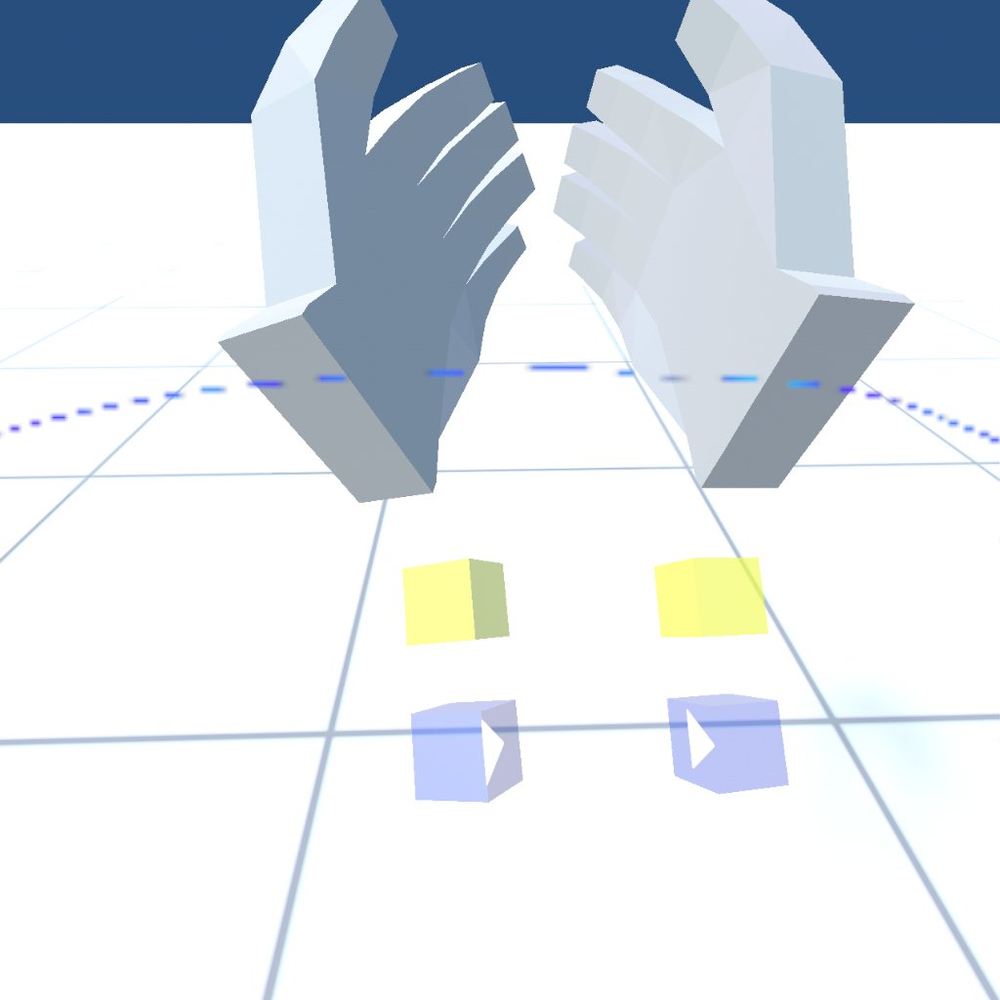
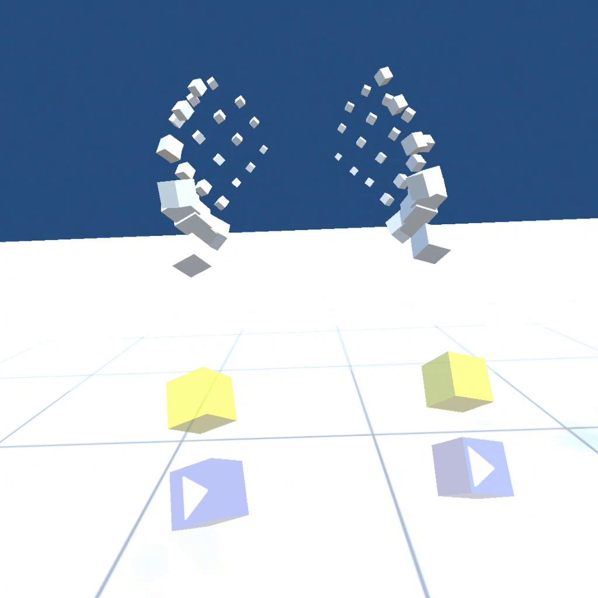
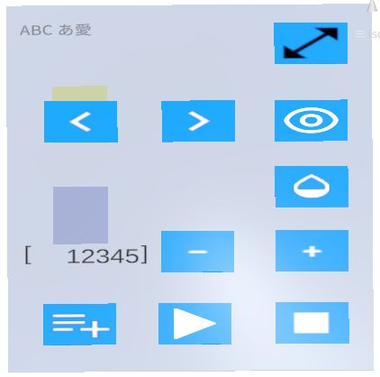
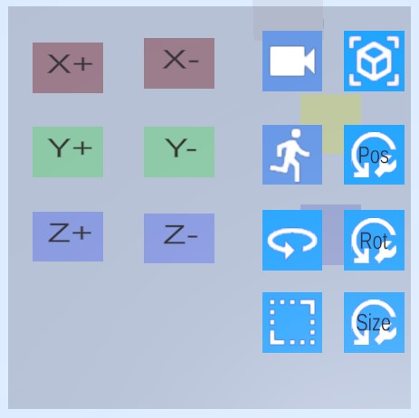
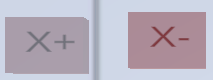
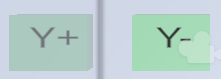
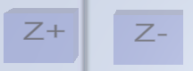
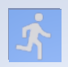
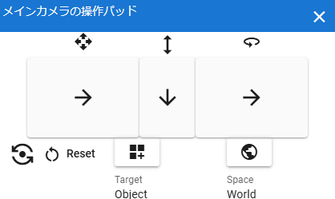

17.2. How to operate on VR/AR
In addition to controllers for VR devices, Meta Quest 3 fully supports hand tracking.
However, what you can do by default with controllers and hand tracking is different.
17.2.1. Basic operations
- grab:
Grab an object and move it. You can move and rotate it like a real thing.
- When controlling a VR device:
trigger and grip
- During hand tracking:
Pinch the object you want to manipulate with your thumb and index finger
Caution
In the case of Meta Quest 3’s hand tracking, if you turn your palm towards yourself, a systematic operation may be activated. Try to do this with your palm facing the object as much as possible.
Here’s what you can grab and move:
IK markers for each part of VRM
OtherObject (3D model of) itself
IK markers for OtherObject, Camera, Light, Effect, Image
IK marker for Directional Light
- Main camera movement:
Move the main camera, which is the viewpoint of the VR/AR space. The height and position of the viewpoint may differ slightly from the main camera on the normal screen.
- When controlling a VR device:
- Moving forward, backward, left and right:
left stick
- Move up and down:
Move the right stick forward/backward
- During hand tracking:
right hand virtual controller
Set the operation target to
main cameraand the operation mode tomove.
- Main camera rotation:
Rotate the main camera, which is the viewpoint of the VR/AR space.
- When controlling a VR device:
- turn left:
Move the right stick to the left
- turn right:
Move the right stick to the right
When using a VR device controller, rotations other than those listed above are not possible as it may cause confusion.
- During hand tracking:
right hand virtual controller
Set the operation target to
main cameraand the operation mode torotation.
Note
You cannot grab the entire VRM and move it. To move the entire VRM, you need to operate it using the virtual controller described below.
All IK markers are displayed simultaneously in VR/AR space.
Due to VR/AR specifications, IK markers are not displayed transparently and are hidden behind objects.
17.2.2. virtual controller
Since there are many things that cannot be done with just basic operations, we have prepared a virtual controller that can perform specific functions in VR/AR space.
These are displayed diagonally below the virtual hand. It can be used both when using a VR device controller and when tracking hands.
When using a VR device controller |
During hand tracking |
 |
 |
Virtual Controller
By default it is hidden to avoid distractions. Touch the yellow Cube with the fingertips of your virtual hand and a virtual controller will appear.
All buttons are hit-detected by your fingertip, and if you overlap your fingertip with the button, the button will sink.
Left hand |
Right hand |
|---|---|
 |
 |
string displayed at the top |
This is the name of the 3D object currently selected in VR/AR space. This is different from selecting objects on the normal screen. |
Select the previous 3D object. If there is a 2D object in the middle, it will be skipped. |
|
Select the next 3D object. If there is a 2D object in the middle, it will be skipped. |
|
Switch the display of IK markers. You can grab and operate it even when the display is off. It is not linked to the ON/OFF of the IK marker on the normal screen. |
|
Numbers displayed to the left of the center row |
The currently selected keyframe number. |
Return to the previous keyframe. This is almost the same as keyframe operations in the timeline panel. |
|
Return to next keyframe. This is almost the same as keyframe operations in the timeline panel. |
|
Registers the pose of the currently selected 3D object to the currently selected keyframe. Selected here is only valid in VR/AR space. This is different from the selection on the normal screen. |
|
Play the animation. |
|
Stop the animation. |
 |
Move and rotate around the X axis. |
 |
Move and rotate around the Y axis. |
 |
Move and rotate around the Z axis. |
Set the operation target to |
|
Sets the operation target to the |
|
 |
Set the operation mode to |
Set the operation mode to |
Note
For operations other than those listed above, return to the normal screen.
17.2.3. Summary of operations
Meta Quest 3 |
PICO4 |
||
|---|---|---|---|
functions |
Controller |
hand tracking |
Controller |
grab |
trigger or grip |
index finger + thumb |
trigger or grip |
Move main camera |
Left stick + right stick front and back |
right hand virtual controller |
Left stick + right stick front and back |
Rotate main camera |
right stick left and right |
right hand virtual controller |
right stick left and right |
Moving/rotating VRM |
virtual controller |
virtual controller |
virtual controller |
IK markers for each part of VRM |
grab |
grab |
grab |
Moving/rotating other than VRM |
grab |
grab |
grab |
If there is a misalignment between the main camera of this app and the camera (viewpoint) of the VR device, please operate each VR device to return the viewpoint to the center.
Warning
In the PICO4 browser app, controllers B and Y seem to have the function assigned to the browser’s back button. Therefore, if you press it by mistake, carefully read the confirmation message before proceeding.
17.2.4. Convenient operation functions
In VR equipment, the controller is equivalent to the mouse. However, unlike a mouse, it is not suitable for detailed work. This app provides a function called V-pad so that you can operate it to some extent even in environments where you cannot use a mouse.
You can also use it on VR devices to operate the regular screen.
This V-pad allows you to move and rotate the main camera by swiping inside each square. The operating feel of VR devices varies slightly depending on the product.
- Meta Quest 3
You can operate by holding down the trigger and moving the controller inside the square inside the V-pad.
You can rotate the main camera by holding the triggers on both controllers and focusing on the WebGL screen.
- PICO4
You can operate by holding down the trigger and moving the controller inside the square inside the V-pad.
You can operate it by simply moving the stick within the squares on the V-pad. This is the
most recommendedmethod of operation.